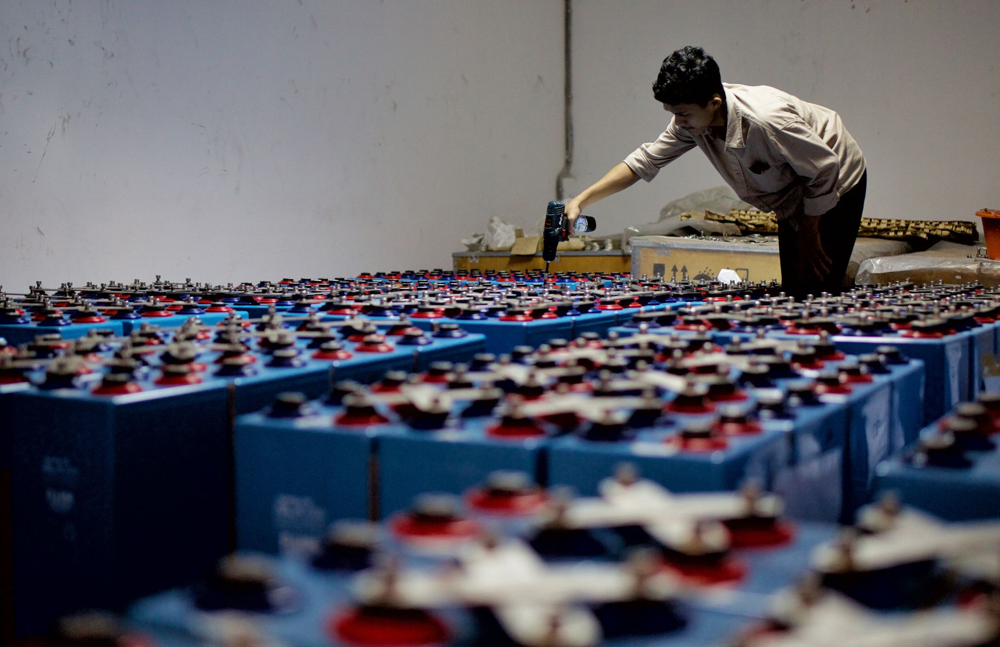

포스코퓨처엠, AI 전사 도입으로 소재 생산성 30% 향상

2차전지 핵심 소재 기업 포스코퓨처엠이 인공지능(AI) 기반의 제조 혁신, 이른바 'AX(AI Transformation)'를 전사 차원에서 본격 추진해 생산성을 30% 높이는 성과를 달성했다고 밝혔다. 이는 반도체·디스플레이 등 첨단 소재 업계 전반으로 확산되고 있는 AI 기반 스마트 팩토리 트렌드의 배터리 소재 버전으로 주목받고 있다.
포스코퓨처엠은 양극재와 음극재 두 가지 배터리 핵심 소재를 모두 생산하는 국내 유일의 종합 2차전지 소재 기업이다. 양극재는 원료의 조성 비율과 소성(고온 열처리) 조건에 따라 용량과 안정성이 달라지고, 음극재는 흑연 입자 크기와 열처리 공정이 충전 속도와 배터리 수명에 직접적인 영향을 미친다. 두 소재 모두 미세한 공정 변수가 품질을 좌우하는 만큼 AI 적용 효과가 크다.
포스코퓨처엠이 도입한 AX 시스템의 핵심은 원료 투입부터 최종 제품 출하까지 전 공정 데이터를 실시간으로 수집·분석해 공정 조건을 자동 최적화하는 것이다. 기존에는 숙련 기술자의 경험에 의존하던 공정 미세 조정을 AI가 대신하면서 품질 편차가 크게 줄었고, 수율 향상으로 이어졌다.
구체적으로 양극재 생산 라인에서는 소성로 온도 프로파일을 AI가 실시간으로 제어해 배치(Batch) 간 품질 편차를 기존 대비 40% 이상 낮췄다. 음극재 라인에서는 흑연 입자 분쇄 공정에 AI 비전 검사를 도입해 규격 외 입자를 조기에 걸러냄으로써 불량률을 절반 수준으로 떨어뜨렸다.
포스코퓨처엠 관계자는 "AI 기반 공정 최적화는 단순한 비용 절감을 넘어 고객사가 요구하는 최신 배터리 규격을 더 빠르게 충족할 수 있게 해준다"며 "특히 전고체 배터리 소재처럼 공정 조건 컨트롤이 더욱 까다로운 차세대 제품 개발에서 AI의 역할이 결정적"이라고 강조했다.
이번 성과는 국내 소재 업계 전반에 AI 전환 압박을 높이고 있다. 반도체 소재, 디스플레이 소재, 배터리 소재를 막론하고 AI를 활용한 공정 최적화와 예측 유지보수가 경쟁력의 핵심 축으로 떠오르면서, AI 내재화를 못 하는 기업은 원가와 품질 양면에서 뒤처질 수 있다는 위기감이 커지고 있다.
글로벌 배터리 소재 시장에서도 AI 기반 제조 혁신은 급격히 확산되고 있다. 중국 CATL의 모회사 격인 배터리 소재 기업들은 이미 AI 공정 제어를 통해 대규모 생산에서도 높은 품질 일관성을 유지하고 있다. CATL과 상류 원자재·소재 기업들의 실적 호조 배경에는 이 같은 기술 우위가 있다는 분석이 많다.
포스코퓨처엠은 AX를 통해 확보한 생산성 향상분을 ESS(에너지저장장치)용 소재 생산 확대에 투입할 계획이다. ESS 시장은 재생에너지 보급 확대에 따라 폭발적으로 성장 중이지만, 현재 '후공정 병목' 현상으로 공급이 수요를 따라가지 못하는 상황이다. 포스코퓨처엠은 이 병목을 AI 기반 생산 최적화로 해소해 시장 선점 기회를 잡겠다는 전략이다.
회사는 2026년 말까지 국내 전 생산 라인에 AX 시스템을 완전 적용하고, 2027년에는 해외 생산 거점(캐나다, 호주 등)으로 확대 적용할 계획이다. 이를 위해 연간 AI·디지털 전환 투자 예산을 전년 대비 50% 이상 늘리기로 했다.
한편 포스코퓨처엠의 AX 성과는 포스코그룹 차원의 '제조업 AI 전환' 전략과도 맞닿아 있다. 포스코홀딩스가 추진 중인 그룹 전체 AI 내재화 프로젝트와 시너지를 내면서, 소재 생산부터 철강 제조까지 통합적인 스마트 제조 체계를 구축한다는 큰 그림이 그려지고 있다.
전문가들은 포스코퓨처엠의 이번 성과가 국내 소재 기업들에게 중요한 벤치마크가 될 것으로 본다. 소재 산업은 전통적으로 숙련 인력의 경험에 의존하는 비중이 높았으나, AI 전환으로 이 패러다임이 바뀌고 있다. 한 업계 전문가는 "AI를 먼저 내재화한 소재 기업이 원가 우위와 품질 신뢰성을 동시에 확보하는 시대가 열렸다"고 말했다.
포스코퓨처엠은 2026년 하반기 기관 투자자와 애널리스트를 대상으로 AX 성과를 공개 발표하는 IR 행사를 열 예정이다. 이번 성과가 시장에서 어떻게 평가받느냐에 따라 밸류에이션 재평가 가능성도 열려 있다는 게 증권가의 시각이다.